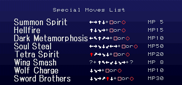

Alucard é capaz de realizar diversas magias e movimentos especiais. Eles são realizados através de comandos semelhantes aos de fighting games. Muitas das magias são realmente úteis nos combates durante o game, outras servem para alcançar lugraes do castelo, enfim saber usar as magias é muito importante. Esta seção mostra as magias e movimentos especiais de Alucard bem como suas utilidades.

Summon Spirit: Alucard evoca um pequeno espírito que viaja pela tela a procura de inimigos. Essa é a magia mais simples de Alucard, custa pouco MP e causa pouco dano além de ser fácil de realizar.
Hellfire: A clássica magia de Dracula na qual ele se teleporta e solta três bolas de fogo. Aqui ela funciona da mesma forma, Alucard se teleporta e solta três bolas de fogo. Se você segurar para cima durante o teleporte, Alucard soltará bolas de fogo negras. É uma boa magia, não muito difícil de realizar e que causa um bom dano, sem contar que deixa Alucard invencível por algum tempo.
Dark Metarmophosis: Magia de cura. Ao realizar esta magia, Alucard recuperará energia ao entrar em contato com sangue. Você já deve ter percebido que muitos monstros espirram sangue ao morrerem, caso mate eles com o efeito desta magia recuperará energia.
Soul Steal: Magia de ataque e cura. Alucard quando conjura esta magia atinge a tudo na tela algumas vezes causando um bom dano e recuperando 8HP por acerto da magia. Ótima magia para usar contra muitos monstros ao mesmo tempo e contra chefes. Magia de difícil realização, porém é a mais útil delas.
Tetra Spirit: Versão aprimorada da Summon Spirit. Alucard dessa vez evoca quatro espíritos que fazem a mesma coisa que na magia anterior. Como a quantidade é maior essa magia causa um dano considerável se comparada com Summon Spirit. Muito mais útil que sua versão anterior.
Wing Smash: Magia da forma de morcego de Alucard. O ?, na verdade é o botão X. O morcego da uma investida no ar enquanto se torna momentaneamente invencível. Boa magia para ser usada contra chefes como Granfaloon e Beelzebulb. Também é boa para se explorar alguns lugares do castelo mais rapidamente.
Wolf Charge: Técnica do lobo que necessita do Relic Skill of Wolf para poder ser realizada. O lobo inicia uma investida, se mantiver o direcional pressionado na direção da técnica, o lobo continuará correndo e matando os oponentes que estiverem em seu caminho. Útil quando se está com pressa.
Sword Brothers: Magia do Familiar Sword e chave de dois grandes gliches do game. Essa magia não é tão poderosa, mas pode quebrar um galho. Aprenda a utilizá-la se quiser ativar dois glitches que nessecitam dela para funcionarem.